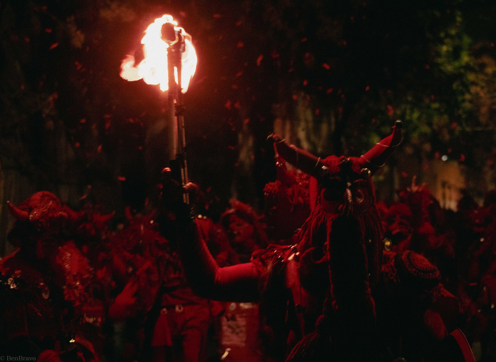
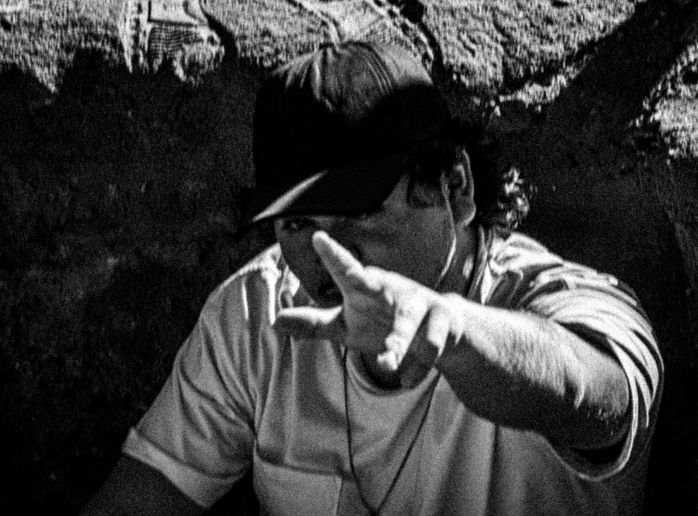

Aprendan del Fuego
Juglaría en llamas
1/12
Dirección audiovisual / Fotografía
UNA PRÁCTICA EN CONSTRUCCIÓN

Juglaría en llamas
ÍNDICE DE COLECCIONES
Dirección, montaje e investigación documental.
Dirección · Cortometraje de ficción
Dirección e investigación · Archivo histórico
LOS PROYECTOS SE PRESENTAN SIN REPRODUCTOR HASTA DISPONER DE LOS VÍDEOS DEFINITIVOS.

BENJAMÍN BRAVO / SANTIAGOQUIÉN ESTÁ DETRÁS DE LA CÁMARA
Dirección audiovisual y fotografía. Una práctica vinculada al cine, la investigación y la creación de imágenes.
TRAYECTORIA Y VÍNCULOS
PARA COLABORACIONES, IDEAS Y CONVERSACIONES